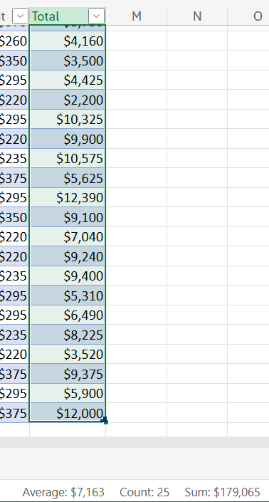

See code repo of this website!
Introduction to Data Analysis Using Microsoft Excel
Lab
Lab Instructions
1. Upload a document using the free online version of Microsoft Office 365
In this task, we will learn how to set up a Microsoft Office 365 account, upload a file to our drive, and open the file. We will also learn how to convert the data into a table to aid with the data analysis we will perform in the remaining tasks.
Using Online Microsoft Excel
Steps:
- Go to https://www.microsoft.com/en-us/microsoft-365/free-office-online-for-the-web.
- Sign up for a free account.
- After you have created an account, sign in.
- Click the 9-dot [App Launcher] button on the top left corner.
- Choose [OneDrive].
- Download the Excel file at https://github.com/dark-teal-coder/web-introduction-to-data-analysis-using-microsoft-excel/blob/main/docs/office_chair_sales_data_analysis.xlsx.
- Upload the Excel file to OneDrive.
- Click open the Excel file. See below.
Turning Data into Table
Steps:
- To highlight the table, select the cells A4 to L84.
- We can use an Excel trick to highlight the table by selecting cell A4 and then, press [ctrl] + [a].
- Click [Insert] and then, [Table].
- In the pop-up, check "My table has headers" and then, click [OK].
2. Perform data analysis using sorting and filtering tools
In this task, we will start analyzing the data using sorting and filtering tools.
Sorting in Excel
Steps:
- To the right of "Sales Rep" column, click the drop-down arrow.
- Choose [Sort A to Z] to sort it in alphabetical order.
- To the right of "Num" column, click the drop-down arrow.
- Choose [Sort Smallest to Largest] to go back to the original data.
Filtering in Excel and Calculating the Total Sales Made by North Division
Steps:
- To the right of the "Region" column, click the drop-down arrow.
- Uncheck "Select All".
- Check "North".
- Click [Apply].
- Select all the cells in the "Total" column and see the sum at the bottom right corner (i.e. $179,065).

3. Perform data mining using the IF function
In this task, we will learn how to do some data mining using the IF function. The idea behind data mining is that we take the data that we already have, and we create new or additional data from it.
4. Create references between tables and search for information with VLOOKUP
In this task, we will learn how to relate tables located
5. Perform data analysis using PivotTables
In this task, we will learn about another strategy for data analysis which is using Pivot Tables. PivotTables allow us to summarize and analyze the data by seeing comparisons in our data.
Graded Assignment
Question 1
You are working in Excel through free Microsoft Office Online and have just finished inputting the sales data from your company. You wish to save the changes made on your spreadsheet. What steps should you follow?
- Click on the floppy disk icon located in the ribbon.
- Select "File" followed by "Save" in the toolbar.
- Select "Edit" followed by "Save" in the toolbar.
- None. All changes are automatically saved while working on Microsoft Excel.
Question 2
Sophie is working on sales data from her company and wishes to only see sales from March while hiding the sales from all other months of the year. What steps should she take?
- Convert her data into a table and sort the table by month. Then, delete the sales data from all other months of the year.
- Highlight the data from March and copy it into a new worksheet to create a new table with the March sales data.
- Convert her data into a table and filter the month column to only show the sales from March.
Question 3
Sophie is working on payroll and has data on the weekly hours for each employee. She wishes to create a new column in her table to classify each employee as F for “Full time” if they worked 40 or more hours, or P for “Part-time” if they worked less than 40 hours.
What function would she write for the first cell (E3) of the column?

- =IF(D3<40,"F","P")
- =IF(D3>40,P,F)
- =IF(D3>=40,"F","P")
- =IF(D3=40,"F","P")
Question 4
Sophie is working on an order and wishes to calculate the total price for the order. She first needs to look up the prices for each item in the order, given the product name and price data.
What function would she write in cell E2 to obtain this information without doing it manually?

- =VLOOKUP(A2,$A$2:$B$12,3,FALSE)
- =VLOOKUP(D3,$A$2:$B$12,3,FALSE)
- =VLOOKUP(E2,$A$1:$C$20,2,FALSE)
- =VLOOKUP(D2,$A$2:$B$12,2,FALSE)
Question 5
Sophie is working on sales data from her company and wishes to see what the total profits were for each Region, on each month. What PivotTable would she draw?
- The PivotTable would have: Months as Values, Profits as Columns, and Profits as Rows.
- The PivotTable would have: Profits as Values, Region as Columns, and Months as Rows.
- The PivotTable would have: Region as Values, Months as Columns, and Profits as Rows.
- The PivotTable would have: Region as Values, Profits as Columns, and Months as Rows.
Graded Assignment Answer Key
Question 1
Answer: None. All changes are automatically saved while working on Microsoft Excel.
Explanation: With the online version of Microsoft Excel, any changes made to the file are automatically saved.
Question 2
Answer: Convert her data into a table and filter the month column to only show the sales from March.
Explanation: You can filter data in Excel by first converting the data into a table and select the dropdown arrow next to the header to filter the data with respect to a given category.
Question 3
Answer: =IF(D3>=40,"F","P")
Explanation: The IF function allows us to determine new information from our data. The IF function must include the logical test which is D3>=40, the response if this is true which is "F" for Full-time, and the response if this is false which is "P" for Part-time.
Question 4
Answer: =VLOOKUP(D2,$A$2:$B$12,2,FALSE)
Explanation: The VLOOKUP function allows you to search for information relating data located in different tables and even worksheets.
Question 5
Answer: The PivotTable would have: Profits as Values, Region as Columns, and Months as Rows.
Explanation: In the PivotTable, the Profits must be in the Values category since they are the numerical component. Then, Region can be positioned as Columns while Months are positioned as Rows or vice versa.